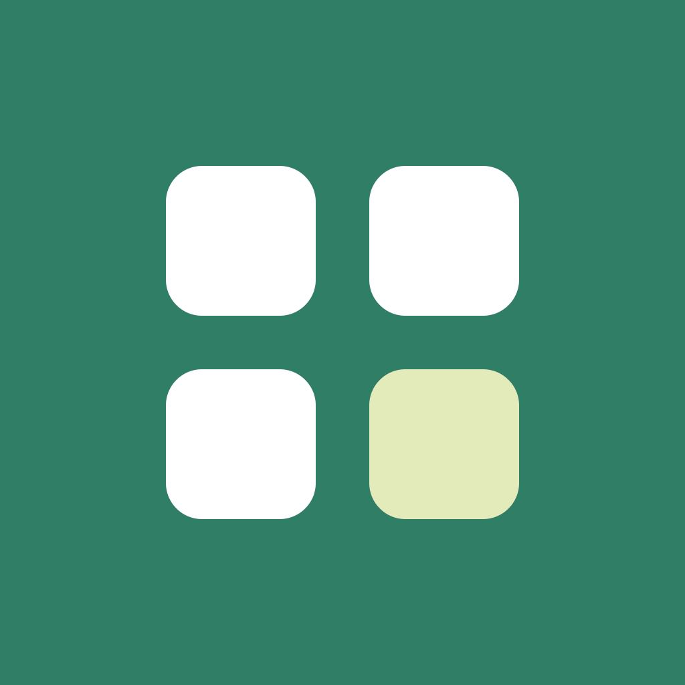

Medya AtölyesiFOTOĞRAF / VİDEO / SES
Bütün medyan.
Tek bir atölye.
Dosyalarını kırp, küçült ve dönüştür. Video ve sesleri birleştir, hızı değiştir, videodan GIF oluştur, metin filigranı veya müzik ekle.
Cihazında işle.
Düzenlemek için hesap açman gerekmez. Medya dosyaların geliştiricinin sunucusuna yüklenmez; işlemler cihazında yapılır.
Destek ve bilgiler
Bu sayfa uygulamanın destek ve gizlilik merkezidir. Mağaza bağlantıları yayımlandığında buraya eklenecektir.